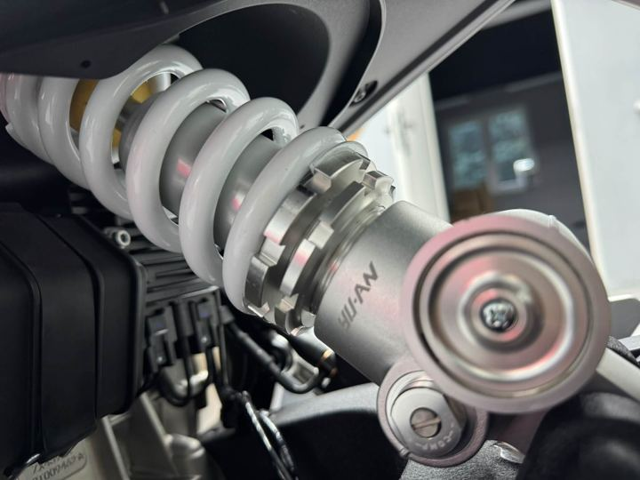
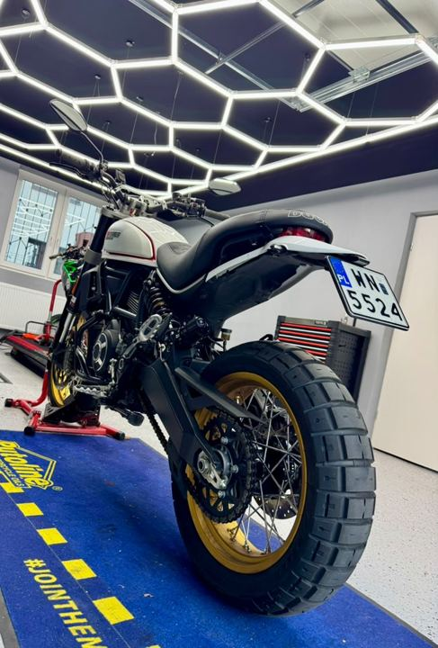

Zrozumienie podwozia
Geometria podwozia i układu napędowego względem środka ciężkości decyduje o tym, jak motocykl się prowadzi. Od tego zaczynamy każdą pracę.
Motorcycle Suspension Workshop w Łomiankach pod Warszawą. Specjalizujemy się w zawieszeniach motocyklowych — i tylko w nich.

LTD34 prowadzi Łukasz Wieczorek — specjalista od zawieszeń motocyklowych, który od ponad 15 lat pracuje zarówno z zaawansowanymi zawieszeniami wyścigowymi, jak i z seryjnymi komponentami, które da się dopracować z myślą o komforcie i bezpieczeństwie.
Warsztat wyposażony jest w hamownię zawieszeń, dzięki której każdą pracę możemy zmierzyć, porównać i udokumentować — zamiast polegać wyłącznie na odczuciach.
Najlepsze komponenty nic nie dadzą, jeżeli nie będzie prawidłowego punktu wyjścia w ich ustawieniach. — LTD34
Geometria podwozia i układu napędowego względem środka ciężkości decyduje o tym, jak motocykl się prowadzi. Od tego zaczynamy każdą pracę.
Hamownia zawieszeń pokazuje charakterystykę tłumienia, temperaturę i histerezę — przed i po serwisie.
Producenci idą na kompromisy kosztowe. Wiemy, gdzie je znaleźć i jak je rozwiązać bez wymiany wszystkiego na nowe.

Przygotowujemy zawieszenia dla zawodników startujących w Motocyklowych Mistrzostwach Polski i zawodach międzynarodowych, a także dla uczestników pucharów i trackdayów. Doświadczenie z toru przenosimy na motocykle drogowe naszych klientów.
Współpracujemy z producentami i dystrybutorami komponentów, m.in. Maselli Suspension, Matris Dampers i K-Tech.
O pracy warsztatu i serwisie amortyzatora na hamowni pisał magazyn Świat Motocykli. Poradniki i relacje z warsztatu znajdziesz na naszym kanale YouTube.
Olszynowa 1b, 05-092 Łomianki · pon.–pt. 18:00–21:00, sob. 11:00–18:00